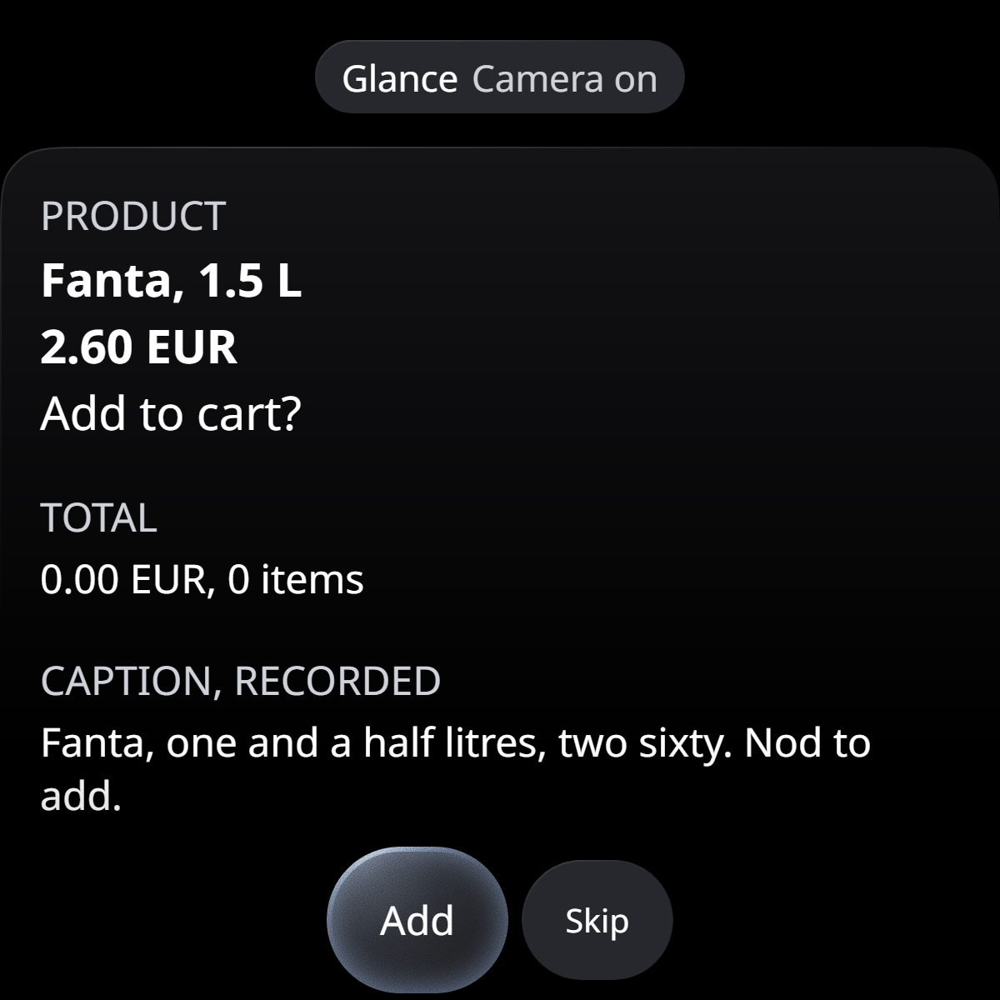

Architecture, measurements, and system rules in the order each topic appears in the pitch.
01Head gestures and screen-off sessions (Pitch 1-2)
02Store workflow and accessibility (Pitch 3-4)
03Existing store and wearable systems (Pitch 4)
04Hardware, recognition, and scale (Pitch 5-6)
05Consent rules and local privacy (Pitch 7-8)
06The Glance protocol (Pitch 9-10)
07Beyond stores and Display HUD (Pitch 11-12)
08Platform fit for Meta AI glasses
09Rollout path
Technical 01 Pitch 1-2: Nod and pocket mode
Nods register during speech, and sessions run with the screen off.
{{diagram head-window}}
{{icon check 34}}
Nod while the voice speaks
A nod or shake stops the prompt audio at once. Confirmed on Ray-Ban Meta glasses on 14 November 2026.
{{icon check 34}}
Phone locked in a pocket
Camera frames, audio prompts, and head motion run inside an Android foreground service with the screen off. Confirmed on 14 November 2026.
Technical 02 Pitch 3-4: Store workflow and accessibility
Glance for stores
The store checkout flow runs end-to-end on Ray-Ban Meta glasses today.
Full hands. Scan-as-you-shop runs in 67 S Group stores in Finland, yet shoppers still hold a phone or scanner. Glasses keep both hands free.
Blind and low-vision shoppers. 83% of visually impaired shoppers struggle to read food packaging (GS1 UK), and self-checkouts rely on touchscreens. Glance reads labels aloud and confirms with a nod.
No ceiling refit. Overhead camera stores require store-wide hardware installs, and Amazon removed Just Walk Out from Fresh stores in 2024. Putting the camera on the shopper avoids ceiling infrastructure.
Fast store onboarding. Stores connect their product list and prices, and checkout screens display one Glance QR code.
Explicit cart consent. Looking at an item only announces it. Adding to the cart requires a nod while that item stays in view.
Catalog-grounded facts. Prices and allergen warnings come from the store list and Open Food Facts. Look-alike items trigger a sharp still matched against reference photos or the barcode.
Redundant inputs. Every action also works via glasses touchpad, phone volume keys, or large phone buttons, with live captions.
Technical 03 Pitch 4: Existing systems
How Glance compares with store and wearable systems
Way to pay or act
Hands free
No screen to read
No new store hardware
Spoken offer, then a yes
Status
Meta Glance
{{icon check 36}}
{{icon check 36}}
{{icon check 36}}
{{icon check 36}}
Prototype, mock payment
Scan and go app, S Group
{{icon x 32}}
{{icon x 32}}
phone app
{{icon x 32}}
67 stores in Finland
Self-checkout kiosk
{{icon x 32}}
{{icon x 32}}
{{icon x 32}}
{{icon x 32}}
Common in stores
Amazon Just Walk Out
{{icon check 36}}
{{icon check 36}}
{{icon x 32}}
{{icon x 32}}
Left US Amazon Fresh, 2024
Phone tap or QR payment
{{icon x 32}}
{{icon x 32}}
a terminal
{{icon x 32}}
Everywhere
"Hey Meta, scan and pay"
{{icon check 36}}
{{icon check 36}}
{{icon check 36}}
not stated
Test in India, Oct 2025
Meta AI and Be My Eyes
{{icon check 36}}
{{icon check 36}}
{{icon check 36}}
{{icon x 32}}
Shipping, no payment
The place states its offer by voice, and a nod only confirms while the item or code stays in view.
Technical 04 Pitch 5-6: Vision and hardware
Under the hood
The prototype runs on the Meta Wearables Device Access Toolkit with Gemini recognition, ElevenLabs speech, and MongoDB storage. It handles dropped links, paused sessions, and low battery, and falls back to the phone cart at a regular checkout if a fault persists.
7 fps
camera stream from the glasses, scanned on the phone for codes
30 Hz
head motion from the glasses, filtered for a nod or shake
1.2 s
median latency for one product-by-sight call
Measured on 14 November 2026: 146 frames
Store-scale observe and verify pipeline measured 0 wrong names across 644 calls using 27% of the prompt tokens.
Technical 05 Pitch 7-8: Consent and privacy
Explicit gesture consent and local face pixelation
{{icon shield-check 40}} Consent
{{icon check 28}}Looking leaves the cart unchanged. A nod counts only for the product you just heard while it stays in view.
{{icon check 28}}At checkout, a nod pays only while the Glance code stays in view.
{{icon check 28}}A shake cancels checkout or removes the last added item.
{{icon check 28}}A nod records consent. Biometric fingerprint checks above a total threshold are configurable on the server.
{{icon lock 40}} Privacy
{{icon check 28}}The phone pixelates faces before a frame leaves the device. If face detection fails, the frame is dropped.
{{icon check 28}}The phone decodes Glance codes locally. The server receives text, never a photo of the checkout.
{{icon check 28}}The server holds a frame in memory for one recognition call and writes none to disk.
A team photo, pixelated as the phone does it.
Technical 06 Pitch 9-10: The Glance protocol
The Glance protocol links a wearer, a place, and a nod.
{{diagram parts}}
Technical 07 Pitch 11-12: Other places and Display Vision
One interaction loop across everyday places
{{diagram places}}

On glasses with a display, the same prompt renders in the lens (mocked on the Meta Ray-Ban Display toolkit). Future extensions: peer-to-peer transfers using the same glance-and-nod consent rules.
Technical 08 Platform fit
Why it gives wearers a daily reason to wear glasses
{{diagram layers}}
{{icon glasses 30}}
Works on current hardware
Ray-Ban Meta and the Device Access Toolkit. Places only display a screen or sticker.
{{icon blocks 30}}
Reusable interaction layer
Any place registers with the server and receives confirmed results.
{{icon repeat 30}}
Repeatable daily habit
Checkouts, transit gates, and pickup counters happen every day.
{{icon accessibility 30}}
Audio-first accessibility
Designed for hands-free and eyes-free operation from step one.
Technical 09 Rollout Roadmap
Start with store checkouts, then expand to other code-based places.
{{diagram gtm}}
{{icon users 36}}First wearers: blind and low-vision shoppers, plus anyone carrying items with full hands.